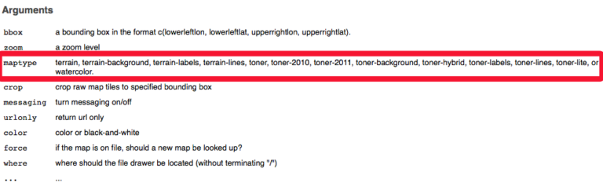

4 Activity: Maps & data with R
4.1 Spatial Visualization with R AKA maps
For a long time, R has had a relatively simple mechanism, via the maps package, for making simple outlines of maps and plotting latitude & longitude points and paths on them.
Now there are a range of options: e.g. rgdal, rgeos, rmaps, maptools, mapdata (also interactive map options e.g. shiny, D3, leaflet).
We’re going to look at the following packages: maps, ggmap & mapproj (and a bit of geosphere):
- maps; https://cran.r-project.org/web/packages/maps/maps.pdf
- ggmap; enables visualization by combining the spatial information of static maps from Google Maps, OpenStreetMap, Stamen Maps or CloudMade Maps with the layered grammar of graphics implementation of ggplot2.
Also access the Google Geocoding, Distance Matrix, and Directions APIs.(brought to you by the creator of ggplot, Hadley Wickham, see e.g. https://journal.r-project.org/archive/2013-1/kahle-wickham.pdf)”Since ggplot2 is an implementation of the layered grammar of graphics… the coordinate system is fixed to the Mercator projection“http://stat405.had.co.nz/ggmap.pdf - mapproj; adds more projections (dozens) see: https://cran.r-project.org/web/packages/mapproj/mapproj.pdf
Start with the map library and a map
library( maps )
map ("nz")# what a cute countryLocation, location, location
Here, we are going to introduce 3 different ways to define a location in ggmap.
library(ggmap)# load ggmap
# Define location 3 ways
# 1. location/address
myLocation1 <- "Melbourne"
myLocation1
# 2. lat/long
myLocation2 <- c(lon=-95.3632715, lat=29.7632836)# not "Melbourne"
myLocation2
# 3. an area or bounding box (4 points), lower left lon,
# lower left lat, upper right lon, upper right lat
# (a little glitchy for google maps)
myLocation3 <- c(-130, 30, -105, 50)
myLocation3Latitude & longitude
One important geo-feature for geo-related applications is getting latitude and longitude of a given address (country, city, suburb, street and etc.).
As once you have the location, you will know where to place your visualisation for this data.
# Convert location/address to its lat/long coordinates:
geocode("Melbourne")
# Yes, Melbourne is where it's supposed to be in, in Australia
# longitude 144.9633
# latitude -37.814So now let’s see a map based on location. There are 4 map sources (online services), with multiple map types:
- stamen: e.g. “terrain”, “toner”, “watercolor” etc.
- google: “roadmap”, “terrain”, “satellite”, “hybrid”
- osm: open street map
- cloudmade: 1000s of maps, but you need an api key
In R, try:
# or help(get_stamenmap)
# also try ?get_googlemap, ?get_openstreetmap and ?get_cloudmademap
?get_stamenmap to see: 
The get_map function provides a general approach for quickly obtaining maps from multiple sources.
myMap <- get_map(location = myLocation2, source = "stamen", maptype = "watercolor")
ggmap(myMap)If you got an error like:
Error: GeomRasterAnn was built with an incompatible version of ggproto.
Please reinstall the package that provides this extension.
Or
Error in get(“f”, environment(CoordMap$train)) : object ‘f’ not found
It is because there are some dependency conflicts of the lastest R and ggplot2 package. You need to update your R packages first with (may take around 20 minutes):
update.packages(ask = FALSE, checkBuilt = TRUE)After that, you need to install 2 packages:
install.packages(c("curl", "yaml"))At last, you can solve this issue by installing the github version packages by:
install.packages("devtools")
devtools::install_github("hadley/ggplot2@v2.2.0")
devtools::install_github("dkahle/ggmap")And then restart your RStudio, and try the code again.
Google Maps
Let’s try another different source.
myMap <- get_map(location = myLocation1, source="google", color="bw")
ggmap(myMap)Let’s also play with the maptype.
Please note, you may also need to change the “maptype” parameters.
Different source support different map types. Use ?get_googlemap to check.
myMap <- get_map(location = myLocation1, source="google", maptype="terrain", zoom = 10)
ggmap(myMap) Try some projections
mercator: equally spaced straight meridians, conformal, straight compass courses
then compare with e.g. albers (named after Heinrich C. Albers), is a conic, equal area map projection that uses two standard parallels https://en.wikipedia.org/wiki/Albers_projection
require(mapproj)
# get map data (lat &amp; lon for boundaries in this case)
m <- map("usa", plot = FALSE)
map(m, project = "mercator") # try mercator first
map.grid(m) # draw graticules
# change the projection to albers
map(m, project = "albers", par=c(39,45))
map.grid(m) # draw graticules to compare more easilyLet’s move on to the whole world.
# get unprojected world limits
m <- map('world', plot = FALSE)
# center on New York
map(m, proj = 'azequalarea', orient = c(41,-74,0))
map.grid(m, col = 2) # draw graticulesYour turn, rotate the map to show Australia (using R).
‘X’ marker on the map
map(m, proj = 'orth', orient = c(41,-74,0))
map.grid(m, col = 2, nx = 6, ny = 5, label = FALSE, lty = 2)
points(
mapproject(
list(y = 41, x = -74)
),
col = 3,
pch = "x",
cex = 2
)# centre on NYYour turn, centre on Melbourne.
Label the map
map("state", proj='bonne', param=45)
data(state)
text(
mapproject(
state.center
),
state.abb
)You may also want to try:
map("state",proj='bonne', param=45)
text(
mapproject(
state.center,
proj='bonne',
param=45
),
state.abb
)However, this does not work.
This is because, the default orientation for map and mapproject are different.
Data on a map using quick map plot
Let’s look at the data first. We are going to use the ggmap built-in data set crime.
help(crime)
head(crime)This data set is pretty large, here, we will choose a subset from it and plot.
murder <- subset(crime, offense == "murder")
qmplot(lon, lat,
data = murder,
colour = I('red'),
size = I(3),
darken = .3
)Choropleth Map
We are going to create a choropleth map of unemployed rate of US.
Two data sets will be used here unemp and county.fips.
Data always should go first, have a look at data sets first.
help(unemp)
head(unemp)
help(county.fips)
head(county.fips)Let’s pre processing the data.
We want to split the unemployed rate into 7 intervals (“<2%”,”2-4%”,”4-6%”,”6-8%”,”8-10%”,”>10%”).
# use the version installed with maps library!
data(unemp)
# set up intervals
Intervals <-as.numeric(
cut(
unemp$unemp,
c(0,2,4,6,8,10,100)
)
)Then we need to match unemployment data to map regions by fips codes.
data(county.fips)
Matches <- Intervals[
match(
county.fips$fips,
unemp$fips
)
]After that, we can prepare the color schema and plot the map.
colors <- c("#ffffd4","#fee391","#fec44f","#fe9929","#d95f0e","#993404")
# draw map
map("county",
col = colors[Matches],
fill = TRUE,
resolution = 0,
lty = 0,
projection = "polyconic"
)State boundaries will make it better.
# draw state boundaries
map("state",
col = "purple",
fill = FALSE,
add = TRUE,
lty = 1,
lwd = 0.3,
projection = "polyconic"
)Never forget the title and legend.
# add title and legend
title("Unemployment by county, 2009")
Legend <- c("<2%","2-4%","4-6%","6-8%","8-10%",">10%")
legend("topright", Legend, horiz = TRUE, fill = colors)Your turn!
Change the intervals to (“<5%”,”5-10%”,”10-15%”,”15-20%”,”20-25%”,”>25%”).
Flow Map
Based on http://flowingdata.com/2011/05/11/how-to-map-connections-with-great-circles/
Let’s look at how to draw a line on the map.
Note: the shortest path between two locations is usually not a straight line on a map, because of the map projection. The shortest path is always the “great circle” that passes through the two points. This is not the same as the path travelled by a vehicle travelling on a fixed bearing which is what is shown on as a straight line using the Mercator projection.
library(geosphere)
map("state")
lat_ca <- 39.164141
lon_ca <- -121.640625
lat_me <- 45.213004
lon_me <- -68.906250
inter <- gcIntermediate(
c(lon_ca,lat_ca),
c(lon_me,lat_me),
n = 50,
addStartEnd=TRUE
)
lines(inter)Now we can draw lines of flights.
Again, let’s look at the data first.
airports <- read.csv("http://datasets.flowingdata.com/tuts/maparcs/airports.csv", header = TRUE)
flights <- read.csv("http://datasets.flowingdata.com/tuts/maparcs/flights.csv", header = TRUE, as.is = TRUE)
head(airports)
head(flights)Plot the map and flights.
# create a world map and limited it to around US areas.
xlim <- c(-171.738281, -56.601563)
ylim <- c(12.039321, 71.856229)
map(
"world",
col="#f2f2f2",
fill=TRUE,
bg="white",
lwd=0.05,
xlim=xlim,
ylim=ylim
)
fsub <- flights[flights$airline == "AA",]
for(j in 1:length(fsub$airline))
{
air1 <- airports[
airports$iata == fsub[
j,]$airport1,]
air2 <- airports[
airports$iata == fsub[
j,]$airport2,]
inter <- gcIntermediate(
c(
air1[1,]$long,
air1[1,]$lat
),
c(
air2[1,]$long,
air2[1,]$lat
),
n = 100,
addStartEnd = TRUE
)
lines(inter, col="black", lwd=0.8)
}So what can/can’t you do with ggmap?
Compare R tools with other options, e.g. GIS tools, also Tableau Public, Google FusionTables.